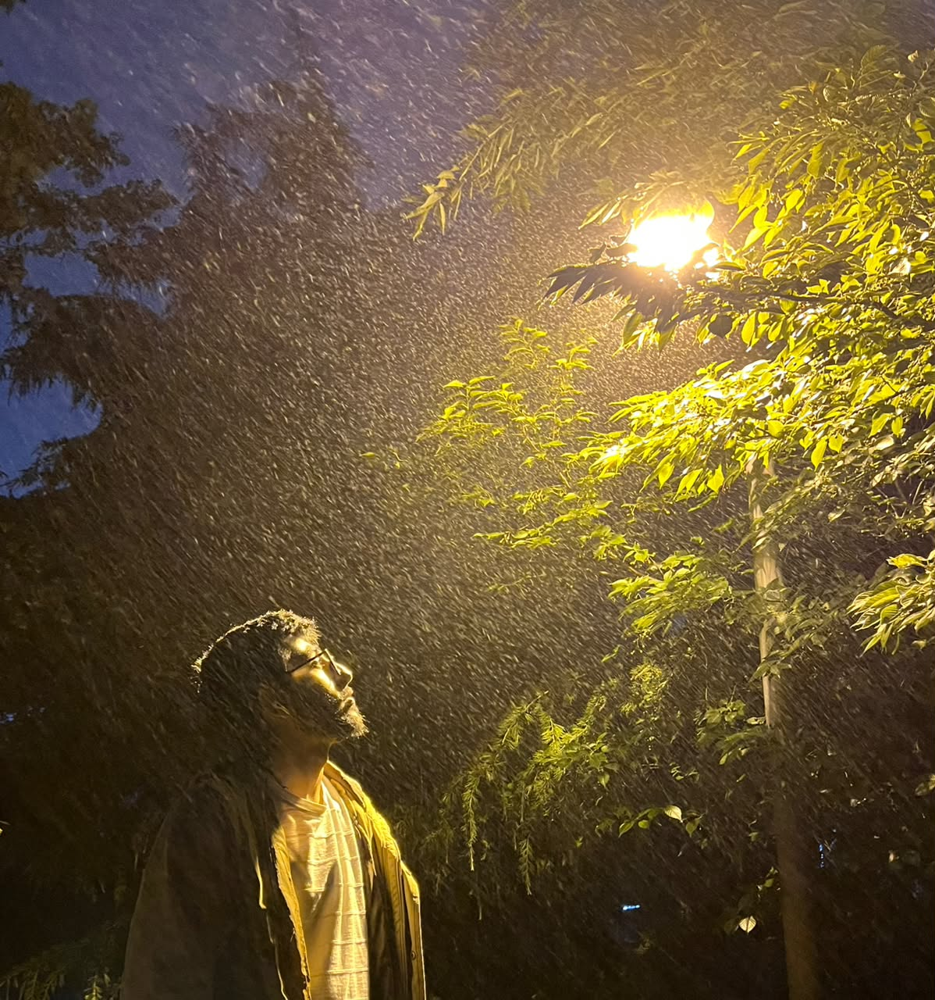

Azerbaijani Student in China
About Me
# About Me My name is Bahadur Adishov, and I am a 20-year-old international student from Azerbaijan. I am currently studying at Weifang University of Science and Technology in China. Studying in an international environment has provided me with valuable opportunities to expand my knowledge, improve my communication skills, and gain a broader understanding of different cultures and perspectives. Education plays an important role in my life. I believe that learning is a continuous process that helps individuals grow both professionally and personally. Throughout my studies, I have developed strong problem-solving skills, adaptability, and the ability to work effectively in different environments. These qualities help me face academic challenges and achieve my goals. One of my main interests is business and entrepreneurship. I enjoy learning about management, marketing, international trade, and the ways businesses operate in a global market. Understanding how successful organizations create value and solve problems motivates me to continue improving my knowledge in this field. I hope to apply what I learn in university to real-world situations and build a successful career in the future. In addition to business, I am interested in technology and innovation. Modern technology has transformed the way people communicate, work, and learn. I enjoy exploring new digital tools and understanding how technological advancements influence industries around the world. I believe that combining business knowledge with technological skills is essential in today's competitive global environment. I also value self-development and lifelong learning. I regularly seek opportunities to improve my skills, gain new experiences, and expand my understanding of different subjects. I believe that determination, discipline, and consistency are important factors in achieving success. Setting goals and working toward them motivates me to become a better version of myself every day. Studying abroad has helped me become more independent and adaptable. Living in a multicultural environment has taught me how to communicate with people from different backgrounds and work effectively as part of a team. These experiences have strengthened my confidence and prepared me for future professional opportunities. My future goal is to continue developing my academic and professional skills while gaining practical experience in international business and related fields. I aim to build a successful career, contribute positively to society, and continue learning throughout my life. In conclusion, I am a motivated and ambitious student who values education, personal growth, and professional development. Through hard work, continuous learning, and determination, I hope to achieve my goals and make meaningful contributions in my future career.
Education & Learning Experience
My name is Bahadur Adishov. I am from Azerbaijan. My education journey started in Azerbaijan where I finished high school. After that, I decided to continue my studies abroad. First, I went to Turkey for university education. Studying in Turkey was a very important period for me. I improved my Turkish language skills, made many international friends and learned a lot about Turkish culture. The education system there was quite good and disciplined. I studied computer-related subjects and gained basic programming knowledge during that time.
After completing some part of my studies in Turkey, I got the opportunity to transfer to Weifang Science and Technology University in China. This was a big change for me. Moving from Turkey to China meant adapting to a completely new environment, new language and new education system. At first it was difficult, but over time I got used to it. Now I am continuing my studies here in Computer Science field.
During my university years, both in Turkey and China, I took many important courses such as Web Programming, C Programming, Data Structures, Algorithms, Database Systems and Software Engineering. These courses helped me understand both theory and practical applications of programming. Besides university lessons, I always tried to improve myself by studying online. I spent many hours on platforms like SoloLearn, HackerRank, freeCodeCamp and YouTube watching tutorials.
One of the biggest advantages of studying abroad is that I learned how to live independently. I had to manage my time, money, studies and daily life by myself. These experiences taught me responsibility and problem-solving skills. Traveling between different countries also helped me become more open-minded and flexible. I learned to respect different cultures and adapt quickly to new situations.
Currently, I am focusing more on web development. I enjoy creating websites and web applications. I believe that the combination of my education in Turkey and China, plus my self-learning efforts, has given me a strong foundation. In the future, I want to become a good full-stack developer and work on international projects. I am grateful for all the opportunities I had and I will continue working hard to achieve my goals.
Education is not only about getting a diploma for me. It is about gaining knowledge, skills and life experience. I faced many challenges during my studies — language problems, cultural differences, difficult exams, and being far from family. But all these challenges made me stronger. I am proud of how far I have come and I am excited about what the future holds. (Word count: 1280)